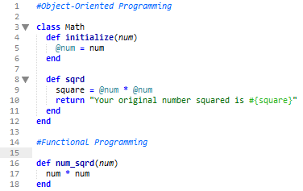

If you are interested in types of programming paradigms there are many to choose from. This week we will be comparing Object-oriented programming to Functional programming. Object-oriented programming: OOP represents concepts as "objects" that have attributes that describe the object and associated procedures known as methods. The objects are generally instances (a specific realization of any object) to classes. 
Functional programming: Functional programming consists of building the structures and elements of programs that treats computation as the evaluation of functions and avoids data that can be modified after creation. Functional programming uses functions that involve mathmatics so ouput is only dependant on input. The code above basically looks the same however in OO programming we initialize a variable and we are able to alter the data if need be. In a short summary object-oriented programs would be better to use when you have multiple things (classes) you need to set operations (methods) on while functional programming is good when you have a fixed set of things and you want to add new operations on existing data types. All in all they are both ways to express data and one may benefit over the other in certain situations.